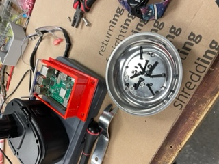
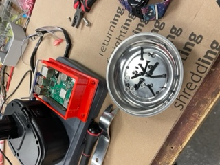
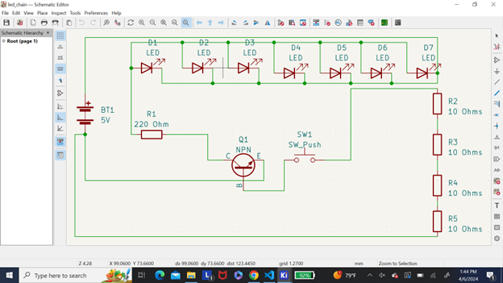
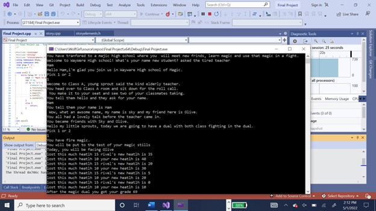
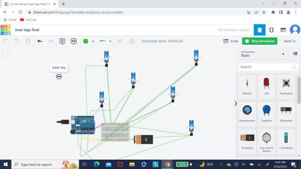

Welcome to Malia's Boards Page
My objectives for the Robtics and Embedded System major are:
- Design and complete robotic and embedded systems solutions that apply to real-world situations and challenges.
This is our drone in some of its final stages
 test
test - Implement a simple microprocessor using digital logic design.
- Demonstrate embedded system design skills, including, but not limited to, microcontroller selection, schematic design, printed circuit board layout, design for electromagnetic compatibility and design for manufacturing.
- Apply knowledge of transducers, actuators and simultaneous hardware and software development in the design of an embedded system.
- Design and analyze real-time embedded systems, including advanced digital logic design, signal processing and highspeed digital systems.
- Implement and evaluate algorithms and methods enabling autonomy in a mobile robot.
This project was using a M5stickC to turn on do a song and write something, then turn off.
This is a basic schematic that i did

insert video here
insert github link
This is an fully c++ coded game that can be controled with imputs from the user

https://github.com/Wolfpanda01/Final-for-c
This project allows a for the possably for a boar walking robot

https://www.youtube.com/watch?v=p7I_QfP55B4&feature=youtu.be
insert paragragh descrption
My objectives for the 3D maker and Fabrication major are:
- Demonstrate the ability to prototype, build, and apply for patents for technology products meeting specific human factors, forms and function criteria
This is our drone in some of its final stagesinsert video hereinsert github link
- Demonstrate the ability to evaluate trends in design principles and apply them into the form and function of devices
- Demonstrate the ability to evaluate material and build technique options during the creation of products and their prototypes
- Demonstrate the ability to evaluate and implement developments within electromechanical,algrithmic,robotic, microprocessor, sensor and other advancing technology areas while making product design decisions
- Demonstrate the ability to work within a maker studio environment to design, build, test and revise products that neet client timeline, design and quality requirements
- Demonstrate proficiency with industry accepted prototyping, modeling, build and maker tool and techniques
insert paragragh descrption
insert video here
insert github link
insert paragragh descrption
insert video here
insert github link
insert paragragh descrption
insert video here
insert github link
insert paragragh descrption
insert video here
insert github link
This was made in fistion 360